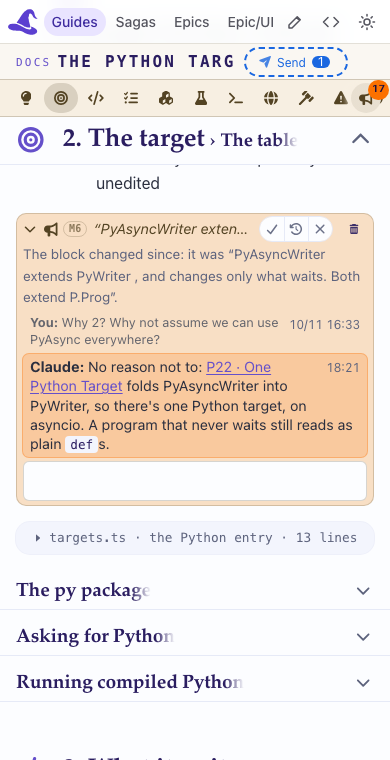

Tell Claude which step, on which page, and what it did instead.
After
spell-ui.js
and
spell-comments.js
are rebuilt: on a guide and an Epic UI page, open a bullhorn, type, Tab out; answer a thread with the pills; use
the pen; delete and Undo. It should look and behave exactly as before P3, the tooltips showing on each button, and
the threads alike on both kinds of page.